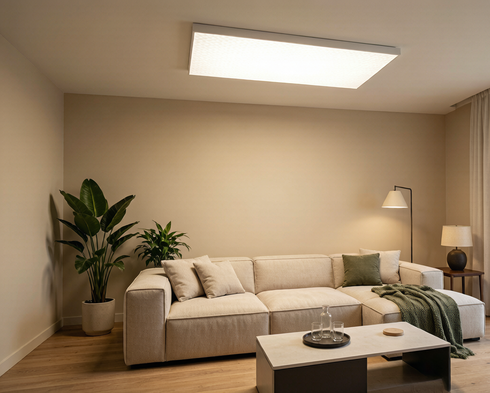

全光谱灯卖疯了，但争议为什么这么大？
2024年全光谱LED灯销量同比增长35%，2025年市场规模突破300亿元。打开任何电商平台搜索"全光谱"，"护眼""类太阳光""无蓝光危害"铺天盖地——从30块的灯泡到3000块的吸顶灯都在打这张牌。
但另一边，"全光谱护眼灯是智商税"的讨论从未停止。 知乎上一条"全光谱灯到底有没有用"的帖子下面吵了上千楼，有人买了某品牌Ra98全光谱吸顶灯回家发现照什么都偏色，有人拿手机摄像头对准灯一拍满屏条纹吓到退货，更多人说"感觉跟普通灯没啥区别白花钱了"。
更关键的是，2026年11月GB7793-2025新国标就要实施了——这是强制性标准，不合规的产品将被界定为不合格商品。现在买灯如果不按新国标来筛，就真可能买成"淘汰品"。
作为天天跟LED光源和驱动电源打交道的从业者，今天把这件事一次说透。
什么是真正的"全光谱"？
要理解全光谱，得先说普通LED怎么发光的。
普通白光LED本质上是"蓝光芯片+黄色荧光粉"的组合。蓝光芯片发出440-460nm的强蓝光，打在黄色荧光粉上激发黄光，蓝光和黄光混合出白光。这个原理带来的问题是——光谱图上有两个致命特征：
- 蓝光区域（440-460nm）有一个巨大的尖峰，强度是其他波段的2-3倍
- 红橙光区域（600-700nm）严重缺失，几乎没有输出
这就是为什么普通LED灯下皮肤发青、食物颜色不对、甚至觉得眼干。不是你的错觉，是光谱确实少了东西。
真全光谱的思路完全不同——通过改进荧光粉配方（加入红粉、绿粉、氮化物荧光粉等），让LED发出的光谱曲线接近太阳光的连续平滑形态。三个硬指标：
- 蓝峰不能太高 —— 蓝光虽然必须有，但不能形成突兀的尖峰
- R9（饱和红色）≥90 —— 这是全光谱的试金石，下文展开讲
- 全波段连续无缺口 —— 光谱曲线必须平滑，不能有明显凹陷
参考标准：Ra≥95、R9≥90、R15≥90，且光谱曲线肉眼可见的平滑连续。
参数不会告诉你的坑：为什么Ra98还能偏色？
商家最爱拿Ra（一般显色指数）做文章，动不动就"Ra98、Ra97"的标。但Ra本身就是个带坑的参数。
Ra到底怎么算出来的？
Ra只取8个标准色样的显色分数做算术平均，这8个颜色是：
R1 淡灰红、R2 暗灰黄、R3 饱和黄绿、R4 中等黄绿、R5 淡蓝绿、R6 淡蓝、R7 淡紫蓝、R8 淡红紫
发现问题没有？全是低饱和度的颜色。 Ra完全不包含：
- R9（饱和红色） —— 中国人餐桌上最重要的颜色
- R10（饱和黄色） —— 看水果、面包的关键
- R11（饱和绿色）、R12（饱和蓝色）
这就是为什么你买了一个标着"Ra98"的吸顶灯回家，照出来的红烧肉像灰烧肉——它的R9可能只有5。那盏灯的Ra确实是98，问题是你关心的颜色它一个没测。
选购口诀：看Ra更要看R9，Ra98+低R9=假全光谱。
一张对比表看懂差距
| 参数 | 普通LED | 合格全光谱 | 优秀全光谱 |
|---|---|---|---|
| Ra（一般显色指数） | ≥80 | ≥95 | ≥97 |
| R9（饱和红） | 10-20 | ≥90 | ≥95 |
| R15（肤色） | 50-60 | ≥90 | ≥95 |
| 蓝光危害等级 | RG1 | RG0 | RG0 |
| 色容差 SDCM | ≤6 | ≤3 | ≤2 |
| 频闪百分比 | >10% | <3.2% | <1% |
记住：真全光谱的底线是R9≥90。低于这个数字，管它标什么Ra都是假的。
频闪：你感觉不到，但眼睛在替你说真话
全光谱≠无频闪。这个等式很多人用惨痛代价才搞明白。
一个最简单的检测方法
打开手机摄像头，对准亮着的灯，如果你在屏幕里看到明暗滚动的条纹——那就是频闪。
原理很简单：人眼有视觉暂留，感觉不到高频明暗变化。但手机摄像头是逐行扫描的，电流不稳导致的亮度波动会被"拍"出来。
频闪的根源在驱动电源
灯的发光靠LED芯片，LED芯片要稳定发光靠驱动电源。驱动电源的任务是把220V交流电转换成LED需要的直流电——但这个转换不可能100%完美，总会有微小波动，这叫电流纹波。
- 好的恒流驱动（伊戈尔、明纬、茂硕等一线品牌）：纹波控制在±1%以内，人眼和手机都感知不到
- 差的驱动（杂牌、拆机件）：纹波可能到±30%甚至更高，低亮度调光时更严重
很多人买灯只看外观和显色指数，驱动电源从来不看——但驱动才是决定频闪的关键硬件。
GB7793-2025新国标来了
2026年11月正式实施的**GB7793-2025《中小学校及幼儿园教室照明设计规范》**是强制性国家标准，对频闪有硬性要求：
- 低频闪烁（≤100Hz）：波动深度≤3.2%
- 高频闪烁（>100Hz）：波动深度≤8%
另外新国标还规定：
- 色温范围：3300K-5300K（不能太冷）
- 显色指数：Ra≥90，R9≥50
- 蓝光危害：必须达到RG0（无危害类）
- 照度均匀度：桌面≥0.7，黑板面≥0.8
虽然这个标准直接针对的是教室照明，但它在法律层面给"健康照明"划了一条硬线。不符合这些指标的灯，按法规就是不合格产品。 现在买灯，直接拿新国标当尺子量。
三步选灯法：买灯不再被忽悠
第一步：看光谱报告
正规产品必须有第三方检测机构（如SGS、TÜV、国家电光源质量监督检验中心）出具的完整光谱检测报告。
- 要求看完整的光谱分布图，不是只看Ra一个数字
- 光谱曲线必须平滑连续，不能有沟壑
- 红橙光波段（600-700nm）必须有充足的输出
没有检测报告的灯，不管它文案写得多好，直接跳过。
第二步：看R9值
在检测报告里找到R9的数值。记住红线：R9<90，说什么都别买。
商家说"Ra98"你反问一句："R9多少？"对方支支吾吾答不上来，可以直接走了。
第三步：测频闪
当场掏手机，打开相机，对准亮着的灯。
- 屏幕上有滚动条纹 → 频闪不合格，退货
- 屏幕干净无条纹 → 至少通过了你的肉眼+手机检测
这个测试虽然不精确，但能挡掉80%的劣质产品。
总结：全光谱是智商税吗？
全光谱灯本身不是智商税。 好的全光谱产品确实能让眼睛更舒服、颜色更真实，尤其对有小孩的家庭和需要精细辨色工作的场景。
但**"买到参数虚标的假全光谱"就是100%的智商税。** 花了全光谱的钱，拿到的还是普通LED的光谱，还沾沾自喜觉得买到了护眼神灯。
好灯的三个标志：敢给你看完整光谱检测报告、敢标注SDCM色容差、敢承诺驱动电源品牌。少一样，心里打个问号。
2026年11月之后，新国标会帮消费者筛掉一批不合格产品。但在那之前，买灯这件事，还是要靠自己的眼睛和常识来判断。
本文由耐利普（Nexlamp）技术团队撰写，专注涂鸦Zigbee智能照明与高品质LED驱动电源研发。咨询电话：13825496855 | www.nexlamp.com